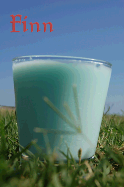

Adventure Time Finn Cocktail Recipe

Ingredients
- 1 oz UV Cake vodka
- .5 oz Cherry vodka
- 1 splash Blue curacao (to color)
- Milk
Directions
In a small glass pour cake vodka and cherry vodka. Fill glass with milk. Splash in a little blue curacao and stir gently.